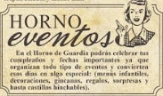

¡¡¡Extra!!! ¡¡¡Extra!!!
¡¡¡El bono de Guardia abre sus puertas!!!
El pasado mes de Marzo fuimos testigos de la apertura de un nuevo local situado en el municipio de San Pedro del Pinatar. Un lugar diferente y original ubicado entre la Estación de Autobuses y el Centro Médico del poblado, frente al CP. Los Pinos
Exteriormente cuenta con una amplia terraza en la que peques y mayores podrán refugiarse del sol en verano y del frio durante los meses de invierno así como una gran zona de aparcamiento. En su interior podemos apreciar un área de tienda (snacks variados, golosinas, territorio fondant y revistas) y una cafeteria con despacho de pan en la que podremos pasar mañanas y tardes deleitándonos con su reposteria recién hecha
Se trata de un sitio especial y novedoso al que tendremos que asistir si queremos disfrutar de sus productos: bocadillos, hamburguesas, perritos calientes, pastelería dulce y salada, gofres, tortitas, crepês, helados y mucho más.
El sueño de una noche de verano
Bajo el Olivo del Horno de Guardia podremos relajarnos durante las noches del verano mientras disfrutamos de una gran variedad de cócteles, combinados y cubalibres con numerosas mezclas de especies: jengibre, cardamomo... Elige la que más te guste!

Dulce, que te quiero Dulce!

Un equipo de investigadores de la Universidad de Granada ha desmontado cientificamente la vieja creencia de que, comer chocolate engorda, con un estudio que demuestra que su consumo está asociado con niveles más bajos de grasa corporal
Además, el chocolate es rico antioxidantes y flavonoides (sustancias en El sueño de una noche de verano naturales que se encuentran en las plantas y Bajo el Olivo del Horno de Guardia podremos relajarnos durante las noches del verano mientras disfrutamos de una gran variedad de cócteles, combinados y cubalibres con numerosas mezclas de especies: jengibre, cardamomo... Elige la que más te guste! protegen nuestras células de los radicales) libres: moléculas inestables de oxigeno a las que se les considera responsables, por ejemplo, del envejecimiento), refuerza los estados de ánimo y es afrodisíaco.
Es por todo ello por lo que en el "Horno de Guardia" elaboran, con chocolate, postres nacionales e internacionales para el deleite de los que más se cuidan, de los más golosos y de los aspirantes a la felicidad plena y es que...a nadie le amarga un dulce! El Horno de Guardia